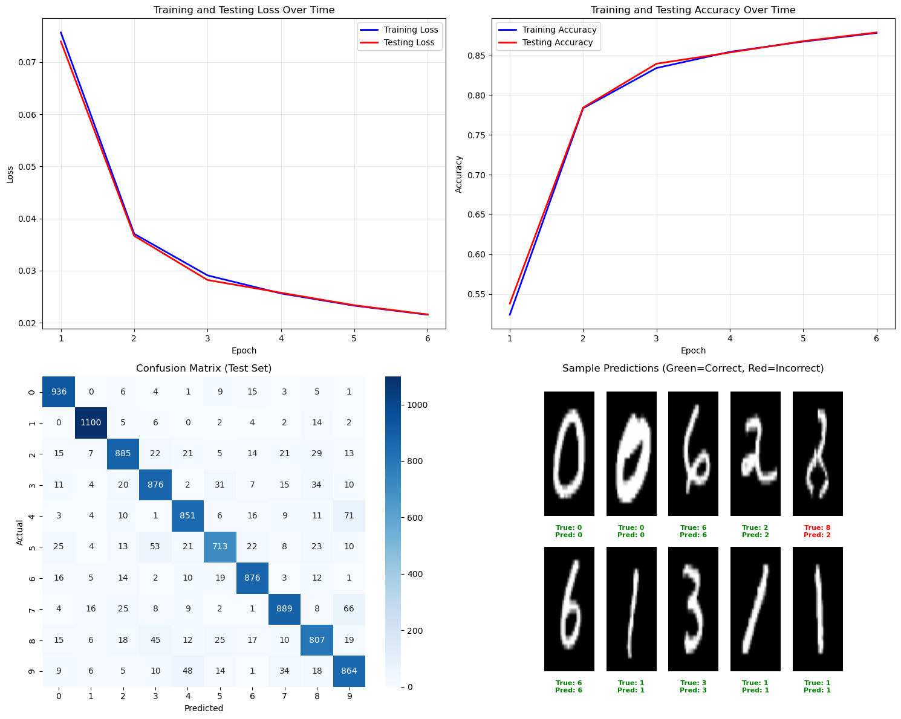

import numpy as np
class NeuralNetwork:
def __init__(self, sizes):
self.num_layers = len(sizes)
self.sizes = sizes
self.weights = [np.random.randn(y, x) for x, y in zip(sizes[:-1], sizes[1:])]
self.biases = [np.random.randn(y, 1) for y in sizes[1:]]
self.activations = [np.zeros((y, 1)) for y in sizes]
self.inputs = [np.zeros((y, 1)) for y in sizes[1:]]
self.deltas = [np.zeros((y, 1)) for y in sizes[1:]]
self.gradients_weights = [np.zeros((y, x)) for x, y in zip(sizes[:-1], sizes[1:])]
self.gradients_biases = [np.zeros((y, 1)) for y in sizes[1:]]
def sigmoid(self, z):
return 1.0 / (1.0 + np.exp(-z))
def forward(self, x):
self.activations[0][:] = x
for layer in range(1, self.num_layers):
z = self.weights[layer-1] @ self.activations[layer-1] + self.biases[layer-1]
self.inputs[layer-1] = z
self.activations[layer] = self.sigmoid(z)
def cross_entropy_loss(self, y_true, y_pred):
"""
Compute the cross-entropy loss.
For binary classification (single output node with sigmoid), the loss is:
- [y_true * log(y_pred) + (1 - y_true)*log(1 - y_pred)]
For multi-class classification (one-hot y_true, softmax output), the loss is:
- sum_k [y_true_k * log(y_pred_k)]
where y_true is one-hot.
This function implements the *general* multi-class case,
which reduces to the binary case if y_true and y_pred are scalars.
Args:
y_true: one-hot encoded vector (K, 1) or scalar (for binary)
y_pred: predicted probability vector (K, 1) or scalar (for binary), values in (0, 1)
Returns:
scalar loss
Note:
In multi-class classification, only one y_true[k] is 1; the others are 0,
so the sum selects only the log(probability of the correct class).
"""
epsilon = 1e-12
y_pred_clipped = np.clip(y_pred, epsilon, 1.0 - epsilon)
if y_true.shape == y_pred.shape and y_true.shape[0] > 1:
# Multi-class (categorical cross-entropy)
loss = -np.sum(y_true * np.log(y_pred_clipped))
else:
# Binary cross-entropy
loss = - (y_true * np.log(y_pred_clipped) + (1 - y_true) * np.log(1 - y_pred_clipped))
return loss
def backward(self, y):
"""
Backpropagate the error and compute the gradients of the loss
with respect to weights and biases for a single training example (x, y).
"""
delta = self.activations[-1] - y
# Store the output layer's delta for use in gradient computation/update
self.deltas[-1][:] = delta
for l in range(2, self.num_layers):
# Sigmoid derivative
sp = self.activations[-l] * (1 - self.activations[-l])
# Propagate delta
delta = (self.weights[-l+1].T @ delta) * sp
self.deltas[-l][:] = delta
# Now update gradients for weights and biases using the computed deltas
for l in range(1, self.num_layers):
self.gradients_biases[-l][:] = self.deltas[-l]
self.gradients_weights[-l][:] = self.deltas[-l] @ self.activations[-l-1].T
def get_gradients(self):
"""
Returns the current gradients of the weights and biases.
Returns:
tuple: (gradients_weights, gradients_biases)
gradients_weights: list of numpy arrays representing gradients of the weights
gradients_biases: list of numpy arrays representing gradients of the biases
"""
return self.gradients_weights, self.gradients_biasesCross Entropy Cost Function
Deep Learning
NumPy
Cross Entropy Cost Function in Neural Networks
The cross entropy cost function is a critical loss function in deep learning, especially for classification tasks. It quantifies how well the predicted probability distribution (\hat{y}) from your neural network matches the true distribution (target labels y).
For binary classification (where each label y \in \{0, 1\}), the binary cross entropy loss for a single example is given by:
L(y, \hat{y}) = - \left[ y \cdot \log(\hat{y}) + (1 - y) \cdot \log(1 - \hat{y}) \right]
Here,
- y = true label (0 or 1),
- \hat{y} = predicted probability that y=1 (output of the model, in range (0,1)).
For a dataset with m samples, the average loss is:
J = -\frac{1}{m} \sum_{i=1}^{m} \left[ y^{(i)} \log \hat{y}^{(i)} + \left(1 - y^{(i)}\right) \log \left(1 - \hat{y}^{(i)}\right) \right]
Specifically,
- When the predicted probability \hat{y} is close to the true label y, the loss is low.
- If the prediction is confident but wrong (e.g., \hat{y} close to 1 when y=0), the loss becomes very large.
- Cross entropy thus encourages the network to predict probabilities that align closely with the true distribution.
Cross entropy can be extended to multi-class classification using the categorical cross entropy formula, which generalizes to more than two classes.
For multi-class classification with K classes (where the label y is a one-hot encoded vector and \hat{y} is the vector of predicted class probabilities), the categorical cross entropy loss for a single example is:
L(\mathbf{y}, \hat{\mathbf{y}}) = - \sum_{k=1}^{K} y_k \log(\hat{y}_k)
Here,
- y_k is 1 if the true class is k, and 0 otherwise.
- \hat{y}_k is the predicted probability that the sample belongs to class k (such that \sum_{k=1}^K \hat{y}_k = 1).
For a dataset with m samples, the categorical cross entropy cost function is averaged:
J = -\frac{1}{m} \sum_{i=1}^m \sum_{k=1}^{K} y_k^{(i)} \log \left(\hat{y}_k^{(i)}\right)
This formulation allows neural networks to learn multi-class classification problems by minimizing the discrepancy between the predicted probability distribution and the true label distribution for each sample.
In summary, cross entropy provides a robust and principled way to train neural networks for classification problems by directly optimizing how closely the predicted probabilities match the targets.
How Cross-Entropy Loss Simplifies and Strengthens Neural Network Backpropagation
Backpropagation is the essential algorithm that allows neural networks to learn: it computes how the loss (the discrepancy between predictions and true labels) changes with respect to each model weight, and then updates those weights to minimize the loss. Using cross-entropy loss alongside the sigmoid (for binary classification) or softmax (for multi-class classification) activation functions introduces a powerful mathematical synergy that makes training not only more efficient, but also more stable.
For binary classification, the output layer of a neural network typically uses a sigmoid activation, producing outputs between 0 and 1, which can be interpreted as probabilities. For multi-class classification, a softmax activation generates a probability distribution across all classes. When these activations are paired with cross-entropy loss, the gradient computation during backpropagation becomes dramatically simpler.
The key reason behind this simplification is that the derivative of the activation function cancels out with a term from the derivative of the cross-entropy loss. Let’s unpack this more concretely.
Binary Classification and Cross-Entropy
Suppose: - a = \hat{y} is the sigmoid-activated output of a single neuron (a = \sigma(z)) - y is the true binary label
The binary cross-entropy loss for one example is: L = -[y \log(a) + (1-y) \log(1-a)]
To adjust the weights, we need \frac{\partial L}{\partial z}, where z is the neuron’s logit. Following the chain rule: 1. Differentiate loss with respect to output a: \frac{\partial L}{\partial a} = -\left( \frac{y}{a} - \frac{1-y}{1-a} \right) 2. Multiply by the derivative of the sigmoid: \frac{da}{dz} = a(1-a): \frac{\partial L}{\partial z} = \frac{\partial L}{\partial a} \cdot \frac{da}{dz} = -\left( \frac{y}{a} - \frac{1-y}{1-a} \right) a(1-a) 3. This simplifies neatly to: \frac{\partial L}{\partial z} = a - y
Thus, the backpropagation “error” at the output is simply the difference between the predicted probability and the true label: \delta = \hat{y} - y
Multi-Class Classification and Cross-Entropy
In the multi-class scenario with softmax activation, let: - \mathbf{a} = \hat{\mathbf{y}} be the vector of class probabilities (outputs of softmax) - \mathbf{y} be the true label in one-hot encoded form
The categorical cross-entropy loss is: L(\mathbf{y}, \mathbf{a}) = -\sum_{k=1}^{K} y_k \log a_k
Calculating the gradient for each class j: 1. Differentiate with respect to a_k: \frac{\partial L}{\partial a_k} = -\frac{y_k}{a_k} 2. The derivative of a_k (from softmax) with respect to z_j is: \frac{\partial a_k}{\partial z_j} = a_k (\delta_{kj} - a_j) where \delta_{kj} is 1 if k=j, 0 otherwise. 3. Applying the chain rule and simplifying, as detailed above: \frac{\partial L}{\partial z_j} = a_j - y_j
So for each output neuron in the multi-class case: \delta_j = \hat{y}_j - y_j
In both binary and multi-class settings, the key result is the same: with cross-entropy loss and sigmoid/softmax activation, the error signal that is propagated backward is simply the difference between prediction and target. This is a tremendous simplification compared to other combinations of loss functions and activations, in which the gradient might be more complicated.
This property leads to a number of practical advantages:
- Efficiency: The computation is direct and fast—just a subtraction between the model’s output and the true label.
- Stability: This pairing helps prevent vanishing gradients at the output layer, so learning remains effective even for extreme predictions.
- Clarity: The error term measures exactly how far off each prediction is, giving a clear signal for weight updates.
- Universality: For nearly all classification problems in deep learning, this combination is the go-to approach—whether for images, text, or any other structured data.
How Backpropagation Occurs Step-By-Step
- Compute Output Error (Delta):
- For each output neuron, the error is \delta = \hat{y} - y.
- This is only so simple thanks to the cross-entropy and compatible activation pairing.
- This delta quantifies the exact responsibility of each output prediction in the total error.
- Propagate Error Backward:
- The error is propagated to previous layers by:
\delta^{[l]} = (W^{[l+1]})^T \delta^{[l+1]} \odot \sigma'(z^{[l]})
where:
- W^{[l+1]} are the weights to the next layer,
- \delta^{[l+1]} is the error from the next layer,
- \sigma'(z^{[l]}) is the derivative of the activation,
- \odot denotes elementwise multiplication.
- This process distributes the error backward, so each weight and neuron is adjusted according to its contribution.
- The error is propagated to previous layers by:
\delta^{[l]} = (W^{[l+1]})^T \delta^{[l+1]} \odot \sigma'(z^{[l]})
where:
- Calculate Gradients and Update Weights:
- The errors (deltas) compute how each parameter affected total loss.
- Gradients are averaged over the batch, and weights are updated to reduce loss.
In summary, the pairing of cross-entropy loss with the right activation (sigmoid for binary, softmax for multiclass) allows for direct, stable, and elegantly simple gradient calculation. This is why cross-entropy is the standard for neural network classification—it brings together mathematical beauty, computational efficiency, and practical effectiveness.
Implementing a Neural Network with Cross Entropy Loss
In the following section, we’ll walk through building a simple neural network using Python and Numpy to understand how the cross entropy cost function operates in practice. We’ll demonstrate how to define the network, perform the forward and backward passes, and update the parameters using gradient descent. This will help make the mathematical formulation of cross entropy tangible in real code, bridging theory and practical implementation.
The NeuralNetwork class below implements a fully connected (dense) neural network from scratch using NumPy. Here’s a breakdown of its key components and methods:
Initialization (__init__)
The network is initialized with a list of layer sizes (e.g., [784, 128, 10] for a network with 784 input neurons, 128 hidden neurons, and 10 output neurons). The constructor:
- Initializes weights and biases: Weights are randomly initialized using a normal distribution, connecting each layer to the next. Biases are also randomly initialized for each layer (except the input layer).
- Pre-allocates storage arrays: To avoid memory allocation during training, the class pre-allocates arrays for:
activations: Stores the output of each layer after applying the activation functioninputs: Stores the weighted sum (before activation) for each layerdeltas: Stores the error signals (gradients with respect to layer inputs) during backpropagationgradients_weightsandgradients_biases: Store the computed gradients for weight and bias updates
Forward Pass (forward)
The forward pass propagates input data through the network:
- Sets the input layer activation to the input data
x - For each subsequent layer:
- Computes the weighted sum: z = W \cdot a + b (where W is weights, a is previous layer activation, b is bias)
- Applies the sigmoid activation function: a = \sigma(z) = \frac{1}{1 + e^{-z}}
- The final layer’s activation represents the network’s prediction
Cross Entropy Loss (cross_entropy_loss)
This method computes the cross-entropy loss between the true labels and predictions:
- For binary classification: Uses the binary cross-entropy formula
- For multi-class classification: Uses categorical cross-entropy, summing over all classes
- Includes numerical stability by clipping predictions to avoid log(0) errors
Backward Pass (backward)
The backward pass implements backpropagation to compute gradients:
Output layer delta: For cross-entropy loss with sigmoid/softmax activation, the error signal is simply the difference between prediction and true label: \delta^{L} = a^{L} - y
Hidden layer deltas: Propagates the error backward through each layer:
- Computes the derivative of the sigmoid activation: \sigma'(z) = \sigma(z)(1 - \sigma(z))
- Multiplies by the transposed weights from the next layer: \delta^{l} = (W^{l+1})^T \delta^{l+1} \odot \sigma'(z^{l})
Gradient computation: Uses the computed deltas to calculate gradients:
- Bias gradients: \frac{\partial L}{\partial b^{l}} = \delta^{l}
- Weight gradients: \frac{\partial L}{\partial W^{l}} = \delta^{l} (a^{l-1})^T
Handwritten Digits Recognization
We’ll now use our neural network to tackle a classic image classification problem: identifying handwritten digits (0–9) from the MNIST dataset.
Overview of the Process
- Loading MNIST data from binaries: The following cell introduces a
MnistDataloaderclass, capable of reading the original MNIST IDX format files and producing arrays of 28×28 images and their corresponding digit labels. - Data verification: We’ll visualize a random sample of training and test images to ensure the data has been parsed correctly.
- Input and label transformation:
- Each image (28×28) is reshaped into a column vector with shape 784×1.
- Each label (an integer 0–9) is converted into a 10×1 one-hot encoded vector.
- Model training and evaluation: With the above transformations, we’ll run forward and backward passes to calculate loss and accuracy, adjusting the network’s weights using gradient descent.
The network’s output layer will have 10 values—one per digit—and prediction is based on which output node has the highest score compared to the true label.
Reading MNIST From IDX Files
The next code cell prepares everything needed to load MNIST directly from the provided binary files. In the following cell, you’ll specify your local file paths to the MNIST dataset, use the loader to ingest the data, and view a selection of sample digits.
import numpy as np
import struct
import matplotlib.pyplot as plt
from typing import List, Dict, Callable
from array import array
from os.path import join
rng = np.random.default_rng(seed=42)
# https://www.kaggle.com/code/hojjatk/read-mnist-dataset?scriptVersionId=9466282&cellId=1
class MnistDataloader(object):
def __init__(self, training_images_filepath,training_labels_filepath,
test_images_filepath, test_labels_filepath):
self.training_images_filepath = training_images_filepath
self.training_labels_filepath = training_labels_filepath
self.test_images_filepath = test_images_filepath
self.test_labels_filepath = test_labels_filepath
def read_images_labels(self, images_filepath, labels_filepath):
labels = []
with open(labels_filepath, 'rb') as file:
magic, size = struct.unpack(">II", file.read(8))
if magic != 2049:
raise ValueError('Magic number mismatch, expected 2049, got {}'.format(magic))
labels = array("B", file.read())
with open(images_filepath, 'rb') as file:
magic, size, rows, cols = struct.unpack(">IIII", file.read(16))
if magic != 2051:
raise ValueError('Magic number mismatch, expected 2051, got {}'.format(magic))
image_data = array("B", file.read())
images = []
for i in range(size):
images.append([0] * rows * cols)
for i in range(size):
img = np.array(image_data[i * rows * cols:(i + 1) * rows * cols])
img = img.reshape(28, 28)
images[i][:] = img
return images, labels
def load_data(self):
x_train, y_train = self.read_images_labels(self.training_images_filepath, self.training_labels_filepath)
x_test, y_test = self.read_images_labels(self.test_images_filepath, self.test_labels_filepath)
return (x_train, y_train),(x_test, y_test) %matplotlib inline
# Set file paths for the MNIST dataset
input_path = '/Users/klian/dev/deep-learning/datasets/mnist/full'
training_images_filepath = join(input_path, 'train-images-idx3-ubyte/train-images-idx3-ubyte')
training_labels_filepath = join(input_path, 'train-labels-idx1-ubyte/train-labels-idx1-ubyte')
test_images_filepath = join(input_path, 't10k-images-idx3-ubyte/t10k-images-idx3-ubyte')
test_labels_filepath = join(input_path, 't10k-labels-idx1-ubyte/t10k-labels-idx1-ubyte')
# Helper function to display a list of images with their corresponding titles
def show_images(images, title_texts):
cols = 5
rows = (len(images) + cols - 1) // cols
plt.figure(figsize=(30, 20))
for idx, (image, title_text) in enumerate(zip(images, title_texts), 1):
plt.subplot(rows, cols, idx)
plt.imshow(image, cmap=plt.cm.gray)
if title_text:
plt.title(title_text, fontsize=15)
# Load the MNIST dataset
mnist_dataloader = MnistDataloader(
training_images_filepath, training_labels_filepath,
test_images_filepath, test_labels_filepath
)
(x_train_orig, y_train_orig), (x_test_orig, y_test_orig) = mnist_dataloader.load_data()
# Display some random training and test images
images_2_show = []
titles_2_show = []
for _ in range(10):
r = rng.integers(0, 60000)
images_2_show.append(x_train_orig[r])
titles_2_show.append(f'training image [{r}] = {y_train_orig[r]}')
for _ in range(5):
r = rng.integers(0, 10000)
images_2_show.append(x_test_orig[r])
titles_2_show.append(f'test image [{r}] = {y_test_orig[r]}')
show_images(images_2_show, titles_2_show)
Preprocessing + utility functions
Below defines helper functions we’ll use during training and evaluation:
transform(x, y):- Flattens each 28×28 image into a 784×1 vector.
- Converts integer labels (0–9) into one-hot 10×1 vectors.
mean_squared_error(...): Computes MSE loss (used later for reporting).calculate_loss_and_accuracy(...): Runs a full pass over a dataset to compute average loss and classification accuracy.get_predictions(...)/get_actual_labels(...): Convenience helpers to create integer label arrays for things like the confusion matrix.
These functions keep the training loop cleaner and make evaluation code reusable.
def transform(x, y):
x_trans = np.array(x).reshape(-1, 784, 1)
y_trans = np.zeros((len(y), 10, 1))
for idx, label in enumerate(y):
y_trans[idx, label, 0] = 1
return x_trans, y_trans
def mean_squared_error(y_true, y_pred):
"""
Calculate mean squared error loss.
"""
return np.mean((y_true - y_pred) ** 2)
def calculate_loss_and_accuracy(network, x_data, y_data):
total_loss, total_correct = 0.0, 0
num_samples = len(x_data)
for x, y in zip(x_data, y_data):
network.forward(x)
y_pred = network.activations[-1]
loss = mean_squared_error(y, y_pred)
total_loss += loss
predicted_class = np.argmax(y_pred)
actual_class = np.argmax(y)
if predicted_class == actual_class:
total_correct += 1
return total_loss / num_samples, total_correct / num_samples
def get_predictions(network, x_data):
"""
Get predictions for a dataset.
"""
predictions = []
for x in x_data:
network.forward(x)
y_pred = network.activations[-1]
predictions.append(np.argmax(y_pred))
return np.array(predictions)
def get_actual_labels(y_data):
"""
Get actual labels from one-hot encoded data.
"""
return np.array([np.argmax(y) for y in y_data])Training loop (mini-batch gradient descent)
Then we trains the network on MNIST.
- Transform data: Converts images to flattened 784×1 vectors and labels to 10×1 one-hot vectors.
- Hyperparameters: Sets
epochs,batch_size, andlearning_rate. - Model: Creates
NeuralNetwork([784, 128, 10])(one hidden layer with 128 units). - Per-epoch shuffle: Randomly permutes the training set each epoch to improve SGD behavior.
- Mini-batches: Splits training data into batches of size 32.
- Gradient accumulation: For each batch, runs
forward()+backward()per example and sums gradients across the batch. - Parameter update: Updates weights/biases using the batch-averaged gradients (a standard mini-batch gradient descent step).
- Logging: Every 5 epochs, computes and prints train/test loss + accuracy so we can track progress.
Note: In this notebook the loss used for reporting is mean squared error via calculate_loss_and_accuracy, even though earlier we discussed cross-entropy. (The backprop line a_L - y is the simplified gradient commonly used with cross-entropy + sigmoid/softmax.)
x_train, y_train = transform(x_train_orig, y_train_orig)
x_test, y_test = transform(x_test_orig, y_test_orig)
epochs = 30
batch_size = 32
learning_rate = 0.01
network = NeuralNetwork([784, 128, 10])
train_losses, test_losses = [], []
train_accuracies, test_accuracies = [], []
for epoch in range(epochs):
# shuffle the training data
permutation = rng.permutation(len(x_train))
x_train = x_train[permutation]
y_train = y_train[permutation]
# batch processing
num_batches = len(x_train) // batch_size
for i in range(num_batches):
start, end = i * batch_size, (i + 1) * batch_size
x_batch = x_train[start:end]
y_batch = y_train[start:end]
gradients_weights = [np.zeros((y, x)) for x, y in zip(network.sizes[:-1], network.sizes[1:])]
gradients_biases = [np.zeros((y, 1)) for y in network.sizes[1:]]
for x, y in zip(x_batch, y_batch):
network.forward(x)
network.backward(y)
for idx, w in enumerate(network.weights):
gradients_weights[idx] += network.gradients_weights[idx]
for idx, b in enumerate(network.biases):
gradients_biases[idx] += network.gradients_biases[idx]
# update weights and biases
for idx, w in enumerate(network.weights):
w -= learning_rate * gradients_weights[idx] / batch_size
for idx, b in enumerate(network.biases):
b -= learning_rate * gradients_biases[idx] / batch_size
if epoch % 5 == 0:
train_loss, train_acc = calculate_loss_and_accuracy(network, x_train, y_train)
test_loss, test_acc = calculate_loss_and_accuracy(network, x_test, y_test)
train_losses.append(train_loss)
test_losses.append(test_loss)
train_accuracies.append(train_acc)
test_accuracies.append(test_acc)
print(f"Epoch {epoch + 1}/{epochs}: Train Loss = {train_loss:.4f}, Test Loss = {test_loss:.4f}, Train Acc = {train_acc:.4f}, Test Acc = {test_acc:.4f}")
print(f"\nFinal Metrics:")
print(f"Training Loss: {train_losses[-1]:.4f}, Training Accuracy: {train_accuracies[-1]:.4f}")
print(f"Testing Loss: {test_losses[-1]:.4f}, Testing Accuracy: {test_accuracies[-1]:.4f}") /var/folders/8h/0198_l7s2vj1nwsk_h331bc00000gn/T/ipykernel_69972/4086106409.py:19: RuntimeWarning: overflow encountered in exp
return 1.0 / (1.0 + np.exp(-z))Epoch 1/30: Train Loss = 0.0757, Test Loss = 0.0739, Train Acc = 0.5240, Test Acc = 0.5380
Epoch 6/30: Train Loss = 0.0371, Test Loss = 0.0367, Train Acc = 0.7836, Test Acc = 0.7844
Epoch 11/30: Train Loss = 0.0291, Test Loss = 0.0282, Train Acc = 0.8341, Test Acc = 0.8395
Epoch 16/30: Train Loss = 0.0256, Test Loss = 0.0258, Train Acc = 0.8544, Test Acc = 0.8536
Epoch 21/30: Train Loss = 0.0233, Test Loss = 0.0234, Train Acc = 0.8673, Test Acc = 0.8679
Epoch 26/30: Train Loss = 0.0216, Test Loss = 0.0216, Train Acc = 0.8781, Test Acc = 0.8788
Final Metrics:
Training Loss: 0.0216, Training Accuracy: 0.8781
Testing Loss: 0.0216, Testing Accuracy: 0.8788Evaluation and visualization
Finally, we visualize how well our neural network performed when trained using the cross-entropy cost function.
# Comprehensive visualization plots
fig, axes = plt.subplots(2, 2, figsize=(15, 12))
# 1. Loss curves
axes[0, 0].plot(range(1, len(train_losses) + 1), train_losses, 'b-', label='Training Loss', linewidth=2)
axes[0, 0].plot(range(1, len(train_losses) + 1), test_losses, 'r-', label='Testing Loss', linewidth=2)
axes[0, 0].set_xlabel('Epoch')
axes[0, 0].set_ylabel('Loss')
axes[0, 0].set_title('Training and Testing Loss Over Time')
axes[0, 0].legend()
axes[0, 0].grid(True, alpha=0.3)
# 2. Accuracy curves
axes[0, 1].plot(range(1, len(train_losses) + 1), train_accuracies, 'b-', label='Training Accuracy', linewidth=2)
axes[0, 1].plot(range(1, len(train_losses) + 1), test_accuracies, 'r-', label='Testing Accuracy', linewidth=2)
axes[0, 1].set_xlabel('Epoch')
axes[0, 1].set_ylabel('Accuracy')
axes[0, 1].set_title('Training and Testing Accuracy Over Time')
axes[0, 1].legend()
axes[0, 1].grid(True, alpha=0.3)
# 3. Confusion Matrix
from sklearn.metrics import confusion_matrix
import seaborn as sns
# Get predictions on test set
test_predictions = get_predictions(network, x_test)
test_actual = get_actual_labels(y_test)
cm = confusion_matrix(test_actual, test_predictions)
sns.heatmap(cm, annot=True, fmt='d', cmap='Blues', ax=axes[1, 0])
axes[1, 0].set_xlabel('Predicted')
axes[1, 0].set_ylabel('Actual')
axes[1, 0].set_title('Confusion Matrix (Test Set)')
# 4. Sample predictions visualization
# Show some sample predictions
sample_indices = rng.choice(len(x_test), size=10, replace=False)
sample_images = [x_test_orig[int(idx)] for idx in sample_indices]
sample_actual = [y_test_orig[int(idx)] for idx in sample_indices]
sample_predictions = test_predictions[sample_indices]
# Create a grid of sample predictions
cols = 5
rows = 2
axes[1, 1].axis('off')
for idx, (img, actual, pred) in enumerate(zip(sample_images, sample_actual, sample_predictions)):
row = idx // cols
col = idx % cols
y_pos = 1 - (row * 0.5) - 0.25
x_pos = col * 0.2 + 0.1
# Display image
axes[1, 1].imshow(img, cmap='gray', extent=[x_pos-0.08, x_pos+0.08, y_pos-0.2, y_pos+0.2])
# Add prediction text
color = 'green' if actual == pred else 'red'
axes[1, 1].text(x_pos, y_pos-0.25, f'True: {actual}\nPred: {pred}',
ha='center', va='center', fontsize=8, color=color, weight='bold')
axes[1, 1].set_xlim(0, 1)
axes[1, 1].set_ylim(0, 1)
axes[1, 1].set_title('Sample Predictions (Green=Correct, Red=Incorrect)')
plt.tight_layout()
plt.show()/var/folders/8h/0198_l7s2vj1nwsk_h331bc00000gn/T/ipykernel_69972/4086106409.py:19: RuntimeWarning: overflow encountered in exp
return 1.0 / (1.0 + np.exp(-z))